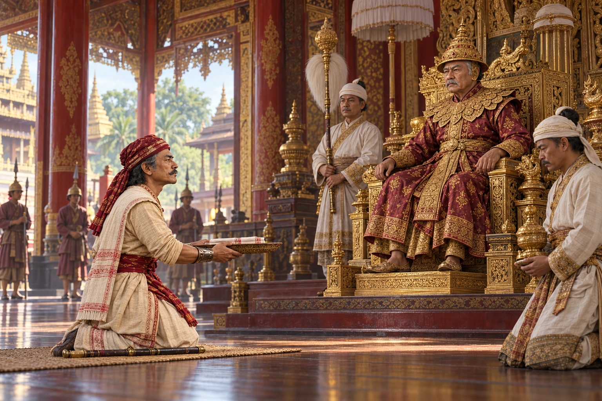

Badan Chandra Borphukan Goes to the Court of Ava
1815–1816 · The days of the Burmese

Hunted by Purnananda Burhagohain, Badan Chandra flees to Bengal, is refused help by the East India Company, and reaches the Burmese king Bodawpaya to ask for an army.
Depicts Badan Chandra’s appeal in 1816. Court layout and petition ceremony are reconstructed; ‘Ava’ is used conventionally, not as proof of the exact palace site. Purnananda is historical context and absent.
Sources
People: Badan Chandra Borphukan, Bodawpaya, Purnananda Burhagohain